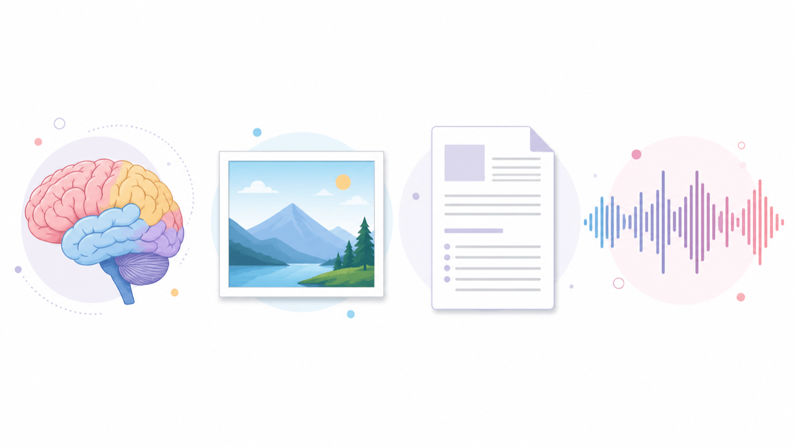
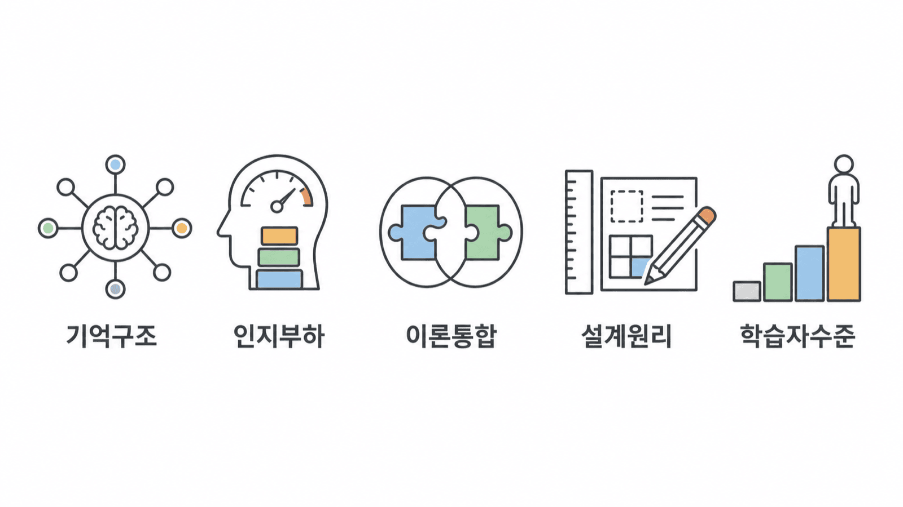
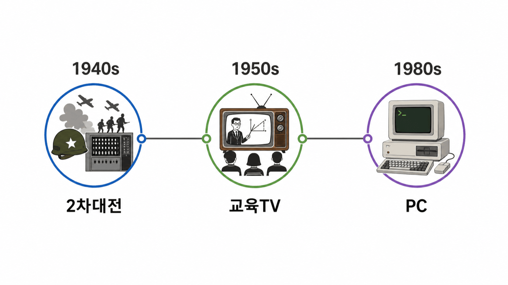
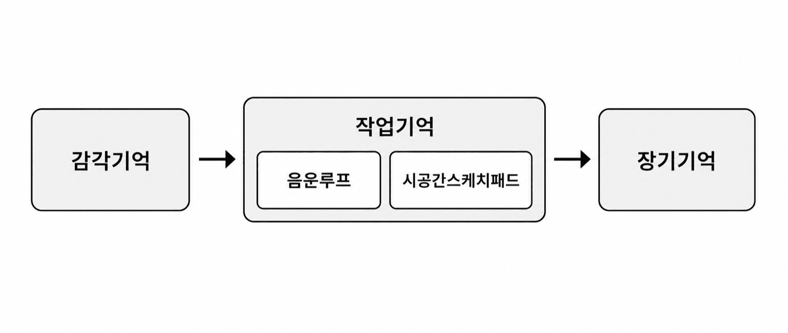
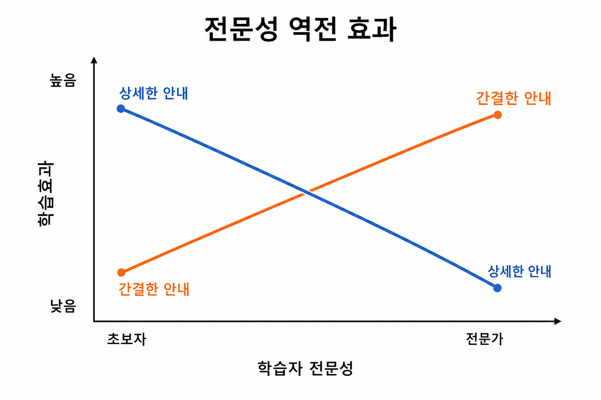
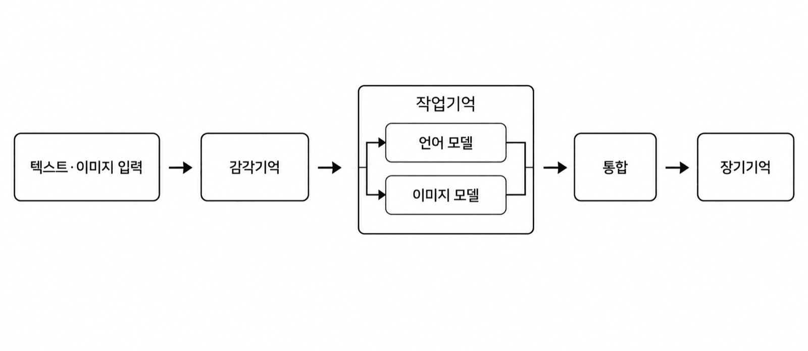
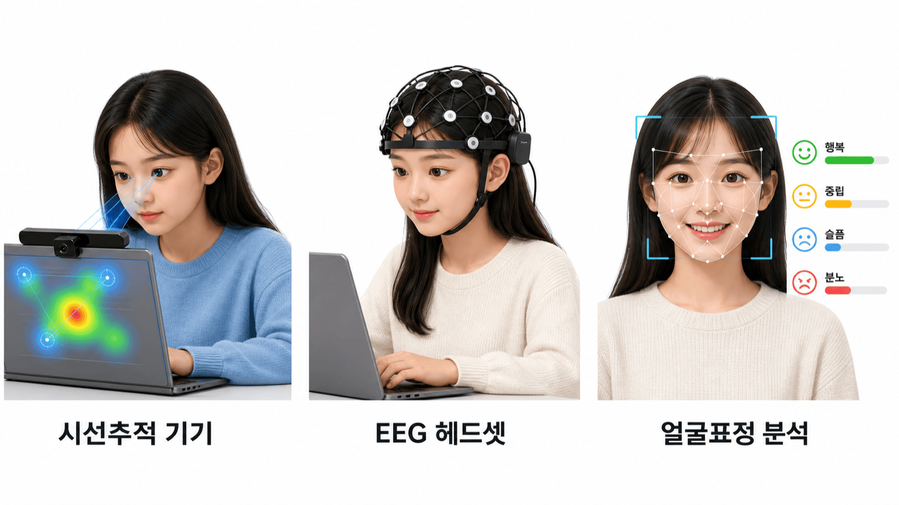
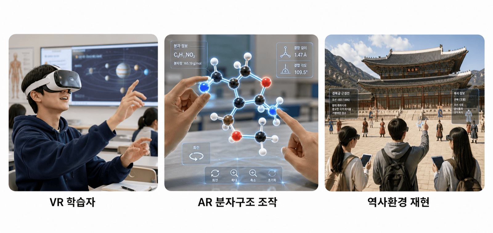

안내 질문: 인지정보처리이론이 멀티미디어 설계 원리의 존재 근거가 되는 이유는 무엇인가?
교재 9장 2절 · 제한된 작동기억과 스키마
감각기억 → 선택적 주의 → 작동기억 → 장기기억의 스키마

안내 질문: 세 가지 인지부하의 차이를 파악하는 것이 왜 수업 설계에서 결정적으로 중요한가?
교재 9장 4절 · 인지부하의 세 범주| 부하 유형 | 원인 | 설계 방향 |
|---|---|---|
| 내재적 부하 | 과제 자체의 복잡성·난이도 | 분할·사전훈련으로 조절 |
| 외재적 부하 | 잘못된 학습 자료 설계 | 불필요 요소 제거 |
| 학습 관련 부하 | 핵심 관계 비교·오류 설명·새 사례 적용 | 필요한 사고에 자원 투입 |

안내 질문: Mayer는 어떻게 이전 인지 이론들을 하나의 처방적 설계 이론으로 통합했는가?
교재 9장 3절 · 말과 그림이 만날 때외부 입력 → 감각기억 → 작동기억 (언어 모델 + 이미지 모델) → 통합 → 장기기억

안내 질문: 세 가지 인지부하 유형은 멀티미디어 설계 원리 체계에 어떻게 대응되는가?
교재 9장 5절 · 멀티미디어 원리를 수업에 적용하기| 원리 | 설계 지침 |
|---|---|
| 일관성 | 관련 없는 그림·텍스트·사운드 제거 |
| 신호 | 핵심어 볼드·색상·화살표로 강조 |
| 중복성 | 음성 설명 시 동일 텍스트 화면 표시 금지 |
| 공간근접성 | 이미지와 설명 텍스트 화면에서 인접 배치 |
| 시간근접성 | 관련 시각·음성 정보 동시 제시 |
| 원리 | 설계 지침 |
|---|---|
| 분할 | 복잡한 내용을 단계별로 순차 제시 |
| 사전훈련 | 핵심 용어·개념을 본 학습 전에 먼저 제시 |
| 정보양식 | 이미지 설명에 화면 텍스트 대신 음성 사용 |
| 완성된 예제 | 핵심 개념 적용 모범 사례를 완성형으로 제시 |
| 원리 | 설계 지침 |
|---|---|
| 멀티미디어 | 텍스트만보다 시각+음성 병행이 더 효과적 |
| 개인화 | 2인칭 호칭·구어체로 능동 처리 유도 |
| 목소리 | 기계음보다 실제 사람 목소리 사용 |
| 이미지 | 화자 화면 이미지 추가 효과는 혼재; 비언어 신호 활용이 더 효과적 |
| 자기 설명 | 배운 내용을 자신의 언어로 재설명하는 기회 제공 |
| 인지부하 유형 | 대응 원리 | 설계 목표 |
|---|---|---|
| 외재적 부하 저감 | 일관성·신호·중복성·공간근접성·시간근접성 (Mayer 5개) | 불필요 처리 제거 |
| 내재적 부하 조절 | 분할·사전훈련·정보양식 (Mayer 3개) + 완성된 예제 (CLT) | 복잡성 단계적 관리 |
| 학습 관련 부하 지원 | 멀티미디어·개인화·목소리·이미지 (Mayer 4개) + 자기설명 (생성학습) | 핵심 관계의 능동적 처리 |
안내 질문: 실감형 미디어는 기존 멀티미디어 설계 원리에 어떤 새로운 도전을 제기하는가?
교재 9장 6절 · 전문성에 맞춰 안내량 조절하기

| 이론 | 핵심 기여 | 설계 원리 연결 |
|---|---|---|
| CIP (감각→작업→장기) | 작동기억의 제한과 스키마 형성 근거 | 모든 원리의 인지과학적 전제 |
| 이중부호화 (Paivio) | 시각·언어 분리 채널 입증 | 이중채널 가정·멀티미디어 원리 |
| CLT (Sweller) | 내재적·외재적·학습 관련 부하의 설계 판단 | 원리 체계의 인지과학적 근거 |
| CTML (Mayer) | 말과 그림의 선택·조직·통합 | 처방적 멀티미디어 설계 지침 |